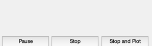
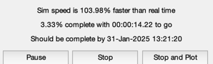
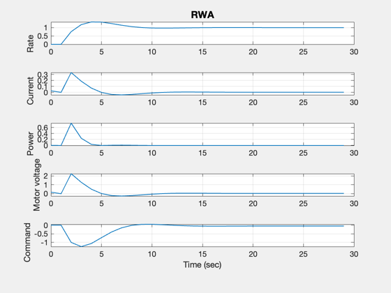

Simulate a RWA with a PI rate controller.
------------------------------------------------------------------------ See also PIDesign, Plot2D, TimeGUI, RK4, RWA ------------------------------------------------------------------------
Contents
- Clean up the workspace
- Global for the TimeGUI
- The control sampling period and the simulation integration time step
- Number of sim steps
- Design the control loops
- Tach loop
- Plotting arrays
- Time statistics function
- Initialize the wheel model
- Measure the voltage and measurement gains
- Rate command
- Initialize the simulation
- Run the simulation
- Plotting
%------------------------------------------------------------------------------- % Copyright 1999 Princeton Satellite Systems, Inc. All rights reserved. %-------------------------------------------------------------------------------
Clean up the workspace
%---------------------- clear RWA
Global for the TimeGUI
%------------------------ global simulationAction simulationAction = ' ';
The control sampling period and the simulation integration time step
%---------------------------------------------------------------------
tSamp = 1;
Number of sim steps
%--------------------
nSim = 30;
Design the control loops
%-------------------------
Tach loop
%----------
[aTL,bTL,cTL,dTL] = PIDesign( 0.7621, 0.5, 0.00954929658551, tSamp );
Plotting arrays
%---------------
xPlot = zeros( 5,nSim);
tPlot = zeros( 1,nSim);
Time statistics function
------------------------
[ ratioRealTime, tToGoMem ] = TimeGUI( nSim, 0, [], 0, tSamp, 'RWASim' );
 Initialize the wheel model
%--------------------------- RWA('initialize');
Measure the voltage and measurement gains
%------------------------------------------ RWA( 'put voltage', 1, 1 ); RWA( 'put speed', 0, 1 ); torqueGain = RWA( 'compute torque', [], 1 ); RWA( 'put speed', 1, 1 ); tachGain = RWA( 'get tachometer measurement', [], 1 );
Rate command
%-------------
wCommand = 1;
Initialize the simulation
%--------------------------
t = 0;
x = 0;
xTL = 0;
Run the simulation
%------------------- for k = 1:nSim % Motor values %------------- current = RWA( 'get current', [], 1 ); power = RWA( 'get power', [], 1 ); voltageMotor = RWA( 'get motor voltage', [], 1 ); % Plotting %--------- xPlot(:,k) = [x;current;power;voltageMotor;xTL]; tPlot(k) = t; % Display the status message %--------------------------- [ ratioRealTime, tToGoMem ] = TimeGUI( nSim, k, tToGoMem, ratioRealTime, tSamp ); % The RWA Tach Loop %------------------ wError = RWA('get tachometer measurement')/tachGain - wCommand; tW = -dTL*wError - cTL*xTL; xTL = aTL*xTL + bTL*wError; RWA('put voltage', tW/torqueGain, 1 ); % Update the equations of motion %------------------------------- x = RK4( 'FRWA', x, tSamp, t ); t = t + tSamp; % Time control %------------- switch simulationAction case 'pause' pause simulationAction = ' '; case 'stop' return; case 'plot' break; end end
Plotting
%--------- yL = ['Rate ';... 'Current ';... 'Power ';... 'Motor voltage';... 'Command ']; Plot2D( tPlot, xPlot, 'Time (sec)', yL, 'RWA') %-------------------------------------- % PSS internal file version information %-------------------------------------- % $Date$ % $Id: 4f8224c61b6fba7ca1fb7061b37e3a8a9d5e140d $